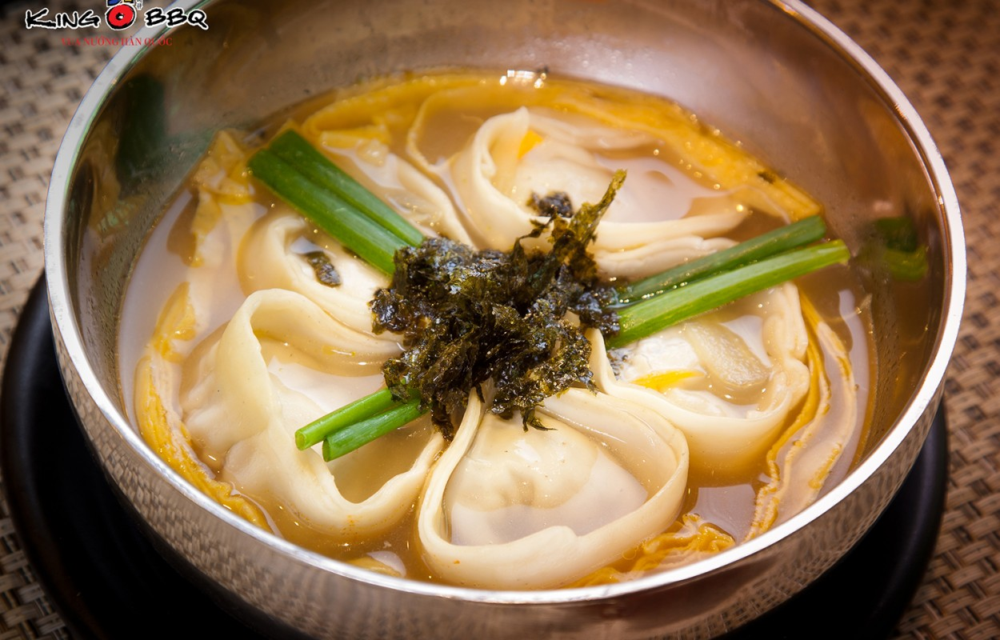
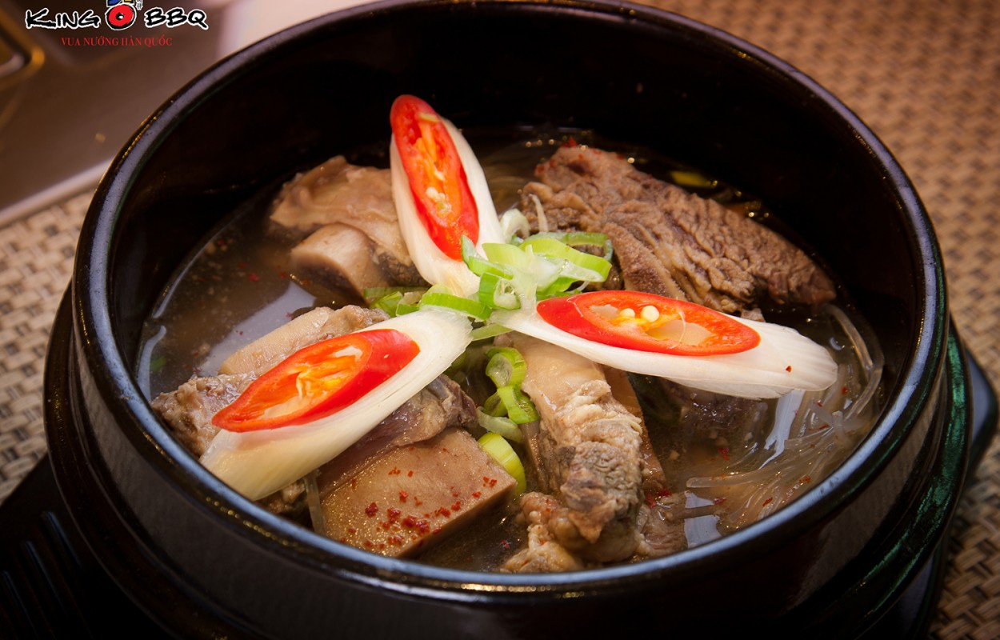
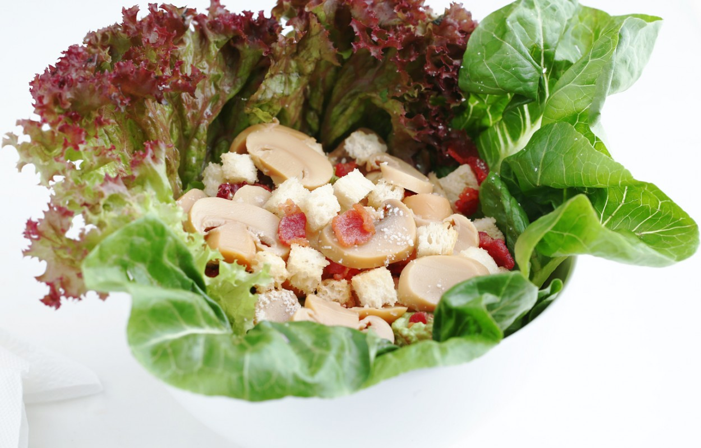

K's restaurant is an unknown restaurant owned by Kỳ. K's, with absolutely no experience and a concept that was made up by Kỳ in 10 minutes, is an ideal place to visit online this weekend.
K's Restaurant
Special

Canh Mantu
Canh Mantu là một món ăn khá phổ biến ở Hàn Quốc, bát canh không chỉ khó quên nhờ hương vị mà còn ở giá trị dinh dưỡng của các thực phẩm trong món ăn.

Canh sườn bò Hàn Quốc
Canh sườn bò Hàn Quốc là một trong những loại canh bổ dưỡng của Hàn Quốc. Canh sườn bao gồm hai nguyên liệu chính là Sâm quý của Hàn Quốc và sườn bò Mỹ

Caesar Salad
Caesar Salad là một trong những loại salad nổi tiếng nhất tại các nhà hàng ẩm thực phục vbụ món Âu. Mang hương vị truyền thống đặc trưng nước Ý của phô mai Parmesan, xà lách Roman, dầu Olive…